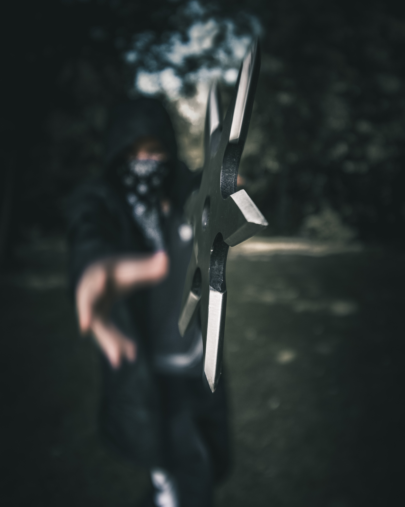

본명: 시마다 겐지, 연령: 35 직업: 모험가 활동 근거지: 네팔, 샴발리 수도원 소속: 시마다 일족 (예전 기록), 오버워치 (예전 기록) 우리의 겐지는 겐지가 얼마나 철철 넘치는 겐지 “내 한 몸 버릴지언정, 내 명예는 버리지 않으리.” 사이보그 시마다 겐지는 한때 거부했던 자신의 로봇 육체를 받아들였으며, 그 과정에서 한 차원 더 높은 인간성을 갖게 되었다. 시마다 닌자 일족 수장의 막내아들인 겐지는 아버지의 특권 속에서 화려한 삶을 살아왔다. 닌자 훈련에서 타고난 재능을 보였고, 또 이를 즐겼던 그였지만 시마다 가문의 불법 사업에 큰 관심이 없던 겐지는 대부분의 시간을 방탕하게 보냈다. 일족의 대다수는 태평한 겐지를 골칫거리로 여겼고, 또 그런 막내아들을 감싸는 수장을 못마땅해 했다. 그러던 어느 날, 수장은 갑작스러운 죽음을 맞이했고, 겐지의 형인 한조는 겐지에게 선친의 제국에서 더 큰 역할을 맡을 것을 요구했다. 겐지는 이를 거절했고, 한조는 분노했다. 결국 두 형제간의 갈등은 격렬한 대결로 귀결되었고, 그 결과 겐지는 거의 죽음 직전에 이르렀다.
 시마다 닌자 일족 수장의 막내아들인 겐지는 아버지의 특권 속에서 화려한 삶을 살아왔다. 닌자 훈련에서 타고난 재능을 보였고, 또 이를 즐겼던 그였지만 시마다 가문의 불법 사업에 큰 관심이 없던 겐지는 대부분의 시간을 방탕하게 보냈다. 일족의 대다수는 태평한 겐지를 골칫거리로 여겼고, 또 그런 막내아들을 감싸는 수장을 못마땅해 했다. 그러던 어느 날, 수장은 갑작스러운 죽음을 맞이했고, 겐지의 형인 한조는 겐지에게 선친의 제국에서 더 큰 역할을 맡을 것을 요구했다. 겐지는 이를 거절했고, 한조는 분노했다. 결국 두 형제간의 갈등은 격렬한 대결로 귀결되었고, 그 결과 겐지는 거의 죽음 직전에 이르렀다.한조는 자신이 동생을 죽였다고 믿었으나, 겐지는 오버워치와 앙겔라 치글러 박사에 의해 가까스로 구조되었고, 국제 안보군은 시마다 일족과의 전쟁에서 겐지가 보탬이 될 수 있겠다고 판단했다.